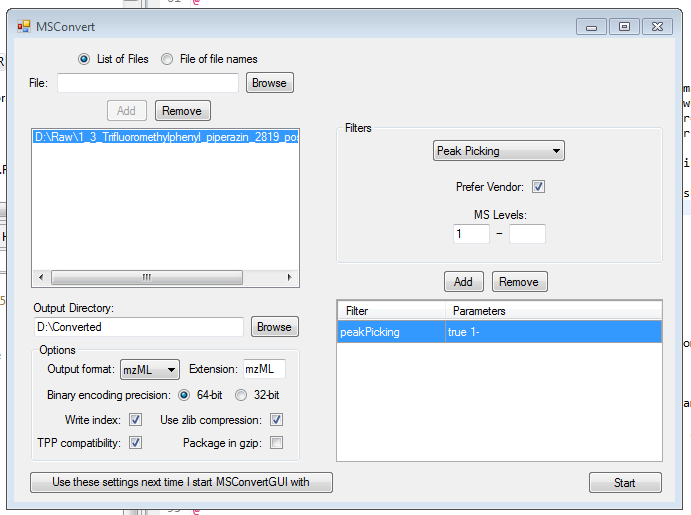
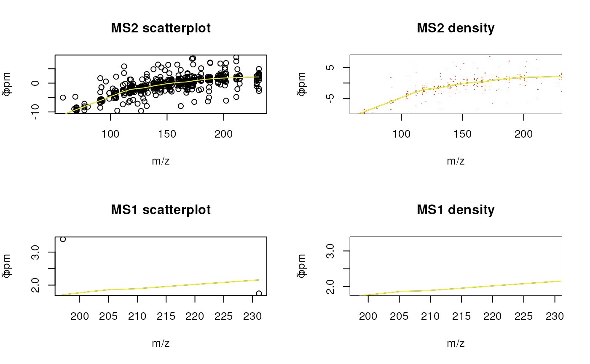
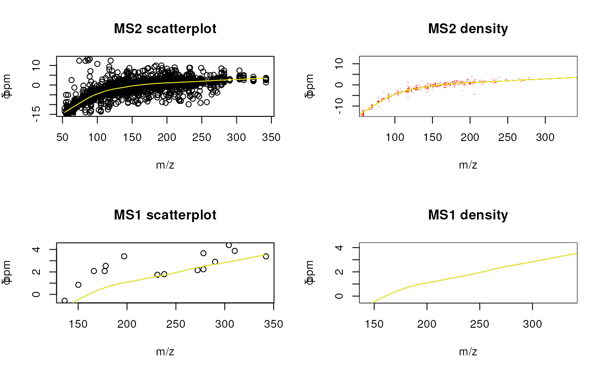

RMassBank.RmdRMassBank is a two-part computational mass spectrometry workflow:
This vignette describes basic usage with the standard workflow. The package is flexible and allows for different advanced use cases. Examples of specialized applications of RMassBank are available at the RMassBank message board hosted by the Metabolomics-Forum: (http://www.metabolomics-forum.com/viewforum.php?f=29).
The library is available from Bioconductor ((http://www.bioconductor.org)). In addition to the library itself, it is recommended to install the OpenBabel chemical toolkit, available from (http://www.openbabel.org) for various platforms (or via Linux package distribution systems).
The library is loaded as follows
library(RMassBank)## Loading required package: RcppThe data used in the following example is available as a package RMassBankData, which must be installed separately and is loaded using
library(RMassBankData)RMassBank handles high-resolution LC/MS spectra in mzML format in centroid1 or in profile mode.
Data in the examples was acquired using an LTQ Orbitrap XL instrument in profile mode, and converted from profile-mode RAW into centroid-mode mzML using MSConvertGUI from ProteoWizard. The settings were as shown in the screenshot below (note the “Peak Picking” filter.) 
Fig. 1: ProteoWiz settings for conversion to mzML
In the standard workflow, the file names are used to identify a
compound: file names must be in the format
xxxxxxxx_1234_xxx.mzXML, where the xxx parts denote
anything and the 1234 part denotes the compound ID in the compound list
(see below). Advanced and alternative uses can be implemented; consult
the implementation of msms_workflow and
findMsMsHR for more information.
A compound list in CSV format is required to identify all compounds
unambiguously. The CSV file is required to have at least the following
columns, which are used for further processing and must be named
correctly (but present in any order):
ID, Name, SMILES, RT, CAS. The columns ID and
SMILES must be filled, the other columns must be present in
the file but do not need to be filled. ID specifies an
(arbitrary) numeric ID code which must be < 4 digits long;
SMILES specifies a SMILES code with the chemical structure
of the compound (and is used to extract the molecular formula, for
calculation of molecular masses, for database searching in CTS etc.)
Although the columns Name, RT, CAS have to be present, the
information in the columns is only used if the cells are filled. RT, if
present, specifies the retention time (in minutes; \(\pm\) a window specified in the RMassBank
options, see below) where a LC/MS file is searched for the compound
spectra. CAS and Name are used as additional
information while retrieving annotations from CTS. The compound list
doesn’t have to be ordered in any particular way. It can contain large
numbers of compounds, even compounds which will not be actively used by
the script (Note: Unused compounds don’t require a SMILES code, since
they will not be accessed.)
An example list is provided with the RMassBankData package, and can be copied into a local folder, viewed and edited:
file.copy(system.file("list/NarcoticsDataset.csv",
package="RMassBankData"), "./Compoundlist.csv")## [1] TRUEA number of different settings influence RMassBank. They are partly parameters for data processing and partly constants used for annotation.
A settings template file, to be edited by hand, can be generated using
RmbSettingsTemplate("mysettings.ini")where mysettings.ini is the file that will be generated.
This file should then be edited. Important settings are:
deprofile: Whether to use a deprofiling algorithm to
work with profile-mode data. Default is NA for use with
centroid-mode data. Allowed settings for profile-mode data include
deprofile.fwhm (full-width half-maximum algorithm),
deprofile.spline (cubic spline algorithm),
deprofile.localmax (local maximum). See the respective help
pages for detailed information.rtMargin: The deviation allowed for retention times (in
minutes) when extracting spectra from raw data files.rtShift: The systematic retention time shift (in
minutes) in the LC-MS data compared to the values in the compound
list.babeldir: The directory pointing to the OpenBabel
binaries.use_version: which MassBank data format to use. The
default is the newer version 2; alternatively, the (deprecated) version
1 can be specified for MassBank servers running old versions of the
server software.use_rean_peaks: Whether or not peaks from reanalysis
should be used (see below for details.)add_annotation: Whether or not fragments should be
annotated with the (tentative) molecular formula in MassBank
records.annotations: A list of annotation data used in the
MassBank records.
authors, copyright,
publication, license, instrument,
instrument_type, compound_class: values for
the corresponding MassBank fieldsconfidence_comment: A commentary field about “compound
confidence” which is added like “COMMENT: CONFIDENCE standard compound”
in the MassBank record.internal_id_fieldname: The name for an internal ID
field in the MassBank record where to store the compound ID (in the
compound list). For internal_id_fieldname = “MY_ID”, the ID
will be stored like “COMMENT: MY_ID 1234”.entry_prefix: The prefix for MassBank accession
IDs.ms_type, ionization, lc_*:
Annotations for the LC and MS information fields in the MassBank
records.ms_dataprocessing: Tags added to describe the data
processing. In addition to the tags specified here, MS$DATA_PROCESSING:
WHOLE RMassBank will be added (corresponding to a list(“WHOLE” =
“RMassBank”) entry for this option.)annotator: For advanced users: option to select your
own custom annotator. Check ?annotator.default and the source code for
details.spectraList: The list of data-dependent scans triggered
by a MS1 scan in their order; used for annotation of MassBank records.
See the template file for description.accessionBuilderType: A string (either “standard”,
“simple” or “selfDefined”) to determine how to generate MassBank record
accession numbers (optional, default: “standard”). RMassBank generates
an accession number for each record. The structure and generation of
this number varies based on accessionBuilderType.
annotations$entry_prefix, the first four digits
are given by the compound ID. The last two digits are generated from the
position of the spectrum in spectraList and the shift
defined in accessionNumberShifts for the selected ion type
(Example: the compound with ID 2112, processed in “pNa” mode ([M+Na]+),
will have accession numbers XX211233, XX211234 … etc in for the first,
second… spectrum in the data-dependent scan, if the “pNa” shift is set
to 32.)annotations$entry_prefix, the 6 digit code is
generated from the position of the spectrum in spectraList
and the shift given in accessionNumberStart. Leading zeros
are added if necessary. (Example: accession numbers XX000043, XX000045 …
will be generated for the first, second … spectrum in the data-dependent
scan if accessionNumberStart is set to 32.)accessionBuilderFile. In particular,
there is no constraint on the prefix and
annotations$entry_prefix will be ignored, if this option is
chosen. The function definition must be in the form
accessionBuilder <- function(cpd, spectrm, subscan).
Note: This functionality is quite advanced. If you really want to
specify your own accessionBuilder instead of using the
“simple” or “standard” option, we highly encourage you to familiarize
yourself with the source code of the function
.buildRecord.RmbSpectraSet in buildRecord.R
first.accessionNumberShifts: A list defining the starting
points for generating MassBank record accession numbers. This will be
used if accessionBuilderType is unspecified or “standard”
(see accessionBuilderType above).accessionBuilderFile: A file with a user-defined
function to generate MassBank record accession numbers. This will be
used if accessionBuilderType is “selfDefined” (see
accessionBuilderType above.)accessionNumberStart: An integer < 1000000 defining
the starting point of MassBank record accession numbers. This will be
used if accessionBuilderType is “simple”. (see
accessionBuilderType above).project: A string giving the project tag, optional. If
present, this will be inclueded in the PROJECT field of the
record.recalibrateBy: Which parameter to use for
recalibration: dppm (recalibrate the deviation in ppm) or
dmz (recalibrate the m/z deviation).recalibrateMS1: Whether to recalibrate MS1 data points
separately from MS2 data points ("separate"), with the same
recalibration curve as the MS2 data points ("common") or
not at all ("none"). Note that the MS1 datapoints points
will be used to generate the MS2 recalibration curve in all cases (since
this makes the recalibration curve in high-m/z regions better-defined)
but may be recalibrated independently themselves, if desired.recalibrator: Sets the functions to use for
recalibration. Defaults to
list(MS1="recalibrate.loess", MS2="recalibrate.loess")
which uses a Loess non-parametric fit to generate a recalibration curve.
Any custom function may be specified. The function is expected to accept
a dataset with variables recalfield and
mzFound and to return an object which can be used with
predict(). The input recalfield is the value
to be estimated by recalibration - it will either contain delta ppm
values or absolute mass deviations, depending on the setting for
recalibrateBy. In addition to
recalibrate.loess, recalibrate.MS1 is
predefined, which uses a GAM model for recalibration and appears to work
well for pure MS1 datapoints. However, common recalibration for MS1 and
MS2 appears to be the best option in general.multiplicityFilter: Define the multiplicity filtering
level. Default is 2, a value of 1 is off (no filtering) and >2 is
harsher filtering.titleFormat: The title of MassBank records is a
mini-summary of the record, for example “Dinotefuran; LC-ESI-QFT; MS2;
CE: 35%; R=35000; [M+H]+”. By default, the first compound name
CH$NAME, instrument type AC$INSTRUMENT_TYPE,
MS/MS type AC$MASS_SPECTROMETRY: MS_TYPE, collision energy
RECORD_TITLE_CE, resolution
AC$MASS_SPECTROMETRY: RESOLUTION and precursor
MS$FOCUSED_ION: PRECURSOR_TYPE are used. If alternative
information is relevant to differentiate acquired spectra, the title
should be adjusted. For example, many TOFs do not have a resolution
setting. See MassBank documentation for more.filterSettings: A list of settings that affect the
MS/MS processing.
ppmHighMass, ppmLowMass: values for
pre-processing, prior to recalibration. The default settings (for
e.g. Orbitrap) is 10 ppm for high mass range, 15 ppm for low mass range
(defined by massRangeDivision)massRangeDivision: The m/z value defining the split
between ppmHighMass and ppmLowMass above. The
default m/z 120 is recommended for Orbitraps.ppmFine: This defines the ppm cut-off post
recalibration. The default value of 5 ppm is recommended for
Orbitraps.prelimCut, prelimCutRatio: Intensity
cut-off and cut-off ratio (in % of the most intense peak) for
pre-processing. Affects peak selection for the recalibration only.
Careful: the default 1e4 for Orbitrap LTQ positive could remove all
peaks for TOF data and will remove too many peaks for Orbitrap LTQ
negative mode spectra!specOkLimit: MS/MS must have at least one peak above
this limit present to be processed.dbeMinLimit: The minimum allowable ring and double bond
equivalent (DBE) allowed for assigned formulas. Assumes maximum valences
for elements with multiple possible valences. Default is -0.5
(accounting for fragment peaks being ions).satelliteMzLimit, satelliteIntLimit:
Cut-off m/z and intensity values for satellite peak removal. All peaks
within the m/z (default 0.5) and intensity ratio (default 0.05 or 5 %)
of the respective peak will be removed. Applicable to Fourier Transform
instruments (e.g. Orbitrap).findMsMsRawSettings: Parameters for adjusting the raw
data retrieval.
ppmFine: The ppm error to look for the precursor in the
MS1 (parent) spectrum. Default is 10 ppm for Orbitrap.mzCoarse: The error to search for the precursor
specification in the MS2 spectrum. This is often only saved to 2 decimal
places and thus inaccurate and may also depend on the isolation window.
The default settings (for e.g. Orbitrap) is m/z=0.5 for
mzCoarse.fillPrecursorScan: The default value (FALSE) assumes
all necessary precursor information was available in the mzML file. A
setting of TRUE tries to fill in the precursor data scan number if it is
missing.logging_file: Set a file logs should be written to. By
default, logging_file is not specified and all logging
information is written to STDOUT. Note: This setting will cause a static
package variable to contain the logging file. This variable is checked
by the logging functions, rather than the setting. Hence, changing the
setting manually afterwards will not change the logging file.See also the manpage ?RmbSettings for a description of
all RMassBank settings.
In the first part of the workflow, spectra are extracted from the files and processed. In the following example, we will process the narcotics spectra from the RMassBankData package.
For the workflow to work correctly, a settings file (generated as above and edited accordingly) before must be loaded first.
loadRmbSettings("mysettings.ini")(Note: the template file generated by
RmbSettingsTemplate() has no OpenBabel directory specified.
Correspondingly, RMassBank will use the CACTUS service instead to
generate MOL files. For your actual use, it is strongly recommended to
install OpenBabel and specify its install directory in the settings! The
CACTUS structures are visually less appealing since they have all
hydrogen atoms explicit, and CACTUS is only a backup solution.)
First, create a workspace for the msmsWorkflow:
w <- newMsmsWorkspace()The full paths of the files must be loaded into the container in the
array files:
files <- list.files(system.file("spectra", package="RMassBankData"),
".mzML", full.names = TRUE)
basename(files)## [1] "1_3_Chlorophenyl_piperazin_2818_pos.mzML"
## [2] "1_3_Trifluoromethylphenyl_piperazin_2819_pos.mzML"
## [3] "1_Benzylpiperazin_2820_pos.mzML"
## [4] "Amitriptylin_2821_pos.mzML"
## [5] "Amphetamin_2822_pos.mzML"
## [6] "Benzoylecgonin_2823_pos.mzML"
## [7] "Cocain_2817_pos.mzML"
## [8] "Dextromethorphan_2824_pos.mzML"
## [9] "EDDP_2_Ethyl_1_5_dimethyl_3_3_diphenylpyrrolinium_2825_pos.mzML"
## [10] "Ephedrin_2758_pos.mzML"
## [11] "Ketamin_2826_pos.mzML"
## [12] "Mephedron_4_Methylmethcathinon_2827_pos.mzML"
## [13] "Methadon_2828_pos.mzML"
## [14] "Methamphetamin_2829_pos.mzML"
## [15] "Naltrexon_2830_pos.mzML"
# To make the workflow faster here, we use only 2 compounds:
w@files <- files[1:2]Note the position of the compound IDs in the filenames. Historically,
the “pos” at the end was used to denote the polarity; it is
obsolete now, but the ID must be terminated with an underscore.
Additionally, the compound list must be loaded using
loadList (here, using the formerly copied list from
RMassBankData):
loadList("./Compoundlist.csv")This creates a variable compoundList in the global
environment, which stores the compound data. Now, we can start the
complete workflow to extract [M+H]+ spectral data. The workflow standard
workflow consists of 8 steps.
The argument archivename specifies the prefix under
which to store the analyzed result files. The argument mode
specifies the processing mode: pH (positive H) specifies
[M+H]+, pNa specifies [M+Na]+, pM specifies
[M]+, mH and mFA specify [M-H]- and [M+FA]-,
respectively. (I apologize for the naming of pH which has
absolutely nothing to do with chemical pH values.)
Basically, this runs through the entire workflow, which is explained
in more detail below: * Step 1: using the function
findMsMsHR, all the files in files are
searched for MS2 spectra of their respective compound. The found spectra
are stored in the array specs. * Step 2: A molecular
formula fit is attempted for every peak, using the molecular formula of
the parent compound as limiting formula, using the function
analyzeMsMs. The results are stored in the array
analyzedSpecs. * Step 3: The analyzed spectra from the
array analyzedSpecs are aggregated into the list
aggregatedSpecs. This uses the function
aggregateSpectra. * Step 4: Using the function
recalibrateSpectra, a recalibration curve is calculated
from the peaks in aggregatedSpecs, and all spectra from
specs are recalibrated using this curve. The result is
stored in recalibratedSpecs. The recalibration curve is
stored in rc. * Step 5: The recalibrated spectra
(recalibratedSpecs) are re-analyzed with
analyzeMsMs and the results stored in
analyzedRcSpecs. * Step 6: The reanalyzed recalibrated
spectra are aggregated with aggregateSpectra into
aggregatedRcSpecs. Unmatched peaks in
aggregatedRcSpecs are cleaned from known electronic noise
using cleanElnoise. A backup copy of all present results is
saved as archivename``.RData. * Step 7: Using
reanalyzeFailpeaks, all unmatched peaks from spectra in
aggregatedRcSpecs are reanalyzed, allowing \(N_2O\) as additional elements (to account
for oxidation products and \(N_2\)
adducts). The results are stored in reanalyzedRcSpecs. A
backup copy of all present results is saved as
archivename``_RA.RData * Step 8: The function
filterMultiplicity is applied to the peaks: Peaks which
occur only once in all analyzed spectra of a compound are eliminated.
The filtered list is stored under refilteredSpecs, and a
final version of all results is saved as
archivename``_RF.RData. Additionally,
filterMultiplicity creates a CSV file with a list of
(relatively) high-intensity unassigned peaks with the name
archivename``_Failpeaks.csv, which should be manually
checked. Peaks to include must be marked with OK = 1.
The steps can be called individually using the steps
parameter of msms_workflow. Using the
newRecalibration parameter, one can specify if RMassBank
should do a new recalibration (default, TRUE) or use the
recalibration curve stored in rc (FALSE). This
is useful for re-using a recalibration curve in the reanalysis of the
same data in another mode: After the detection and processing of all
[M+H]+ spectra, which will be present for a large number of compounds,
one can rerun the workflow with
newRecalibration = F, mode="pNa" and reuse the same
calibration curve for Na adduct spectra (which on their own would be too
few for a sufficiently good recalibration curve.) The
useRtLimit parameter activates or deactivates the usage of
retention time constraints when searching for spectra with
findMsMsHR.
It is useful to perform the workflow in two blocks, the first being
step 1-4 and the second being 5-8. After step 4, a graph is displayed
which allows the user to visually evaluate the performance of the
recalibration. The top graphs show the distribution of the mass
deviation of MS/MS fragments from the predicted mass and the
recalibration curve calculated from them; the bottom graphs show the
mass deviation of MS precursor ions. The graph to the left is a complete
xy plot while the graph to the right is a 2D histogram (if the package
gplots is installed on the user’s computer).
TODO: Workflow execution in Chunk 10 is currently disabled, I execute Chunk 11 instead for steps that are already done.
w <- msmsWorkflow(w, mode="pH", steps=c(1:4), archivename =
"pH_narcotics")
The recalibration can also be plotted at a later stage:
If you are experimenting with new datasets which might give errors, it is advised to run the workflow step by step. This is because if an error occurs, you will lose all intermediate results from the workflow, which might complicate finding the errors. (E.g., if you process steps 2-4 and an error occurs in step 3, you will lose the results from step 2.)
w <- msmsWorkflow(w, mode="pH", steps=1)
w <- msmsWorkflow(w, mode="pH", steps=2)
w <- msmsWorkflow(w, mode="pH", steps=3)
# etc.It can be useful to check if any data is retrieved at step 1:
lapply(w@spectra,function(s) s@found)To check the progress through the workflow, call e.g.:
findProgress(w)Note that usually a recalibration curve should be done which >15 compounds, and it will become smoother with more compounds. To show the curve found with the full dataset, we can load the preprocessed dataset from the RMassBankData package in another workflow container.
# In the really evaluated workflow, we do the following:
# we run steps 1 through 3, load the recalibration curve from a stored workflow
# and recalibrate the data using that curve.
storedW <- loadMsmsWorkspace(system.file("results/pH_narcotics_RF.RData",
package="RMassBankData"))## Warning in .updateObject.RmbWorkspace.1to2(w, ..., verbose): You are
## loading an archive from an old RMassBank version. The aggregate tables
## are not loaded from the original object, but recomputed.## Warning in .updateObject.RmbWorkspace.1to2(w, ..., verbose): If you
## hand-edited any aggregate table, the information might not be retained in
## the new object.## Warning in .updateObject.RmbWorkspace.1to2(w, ..., verbose): You are
## loading an archive from an old RMassBank version. The aggregate tables
## are not loaded from the original object, but recomputed.## Warning in .updateObject.RmbWorkspace.1to2(w, ..., verbose): If you
## hand-edited any aggregate table, the information might not be retained in
## the new object.## Warning in .updateObject.RmbWorkspace.1to2(w, ..., verbose): You are
## loading an archive from an old RMassBank version. The multiplicity
## filtering results are not loaded from the original object, but
## recomputed.## Warning in .updateObject.RmbWorkspace.1to2(w, ..., verbose): If you
## hand-edited any multiplicity filtering results, the information might not
## be retained in the new object.Since this recalibration curve was calculated from a MassBank run of the whole 15 file-dataset, we can copy it into our workspace and use it to recalibrate our data without making a new recalibration curve:
# Just to display the recalibration curve as calculated from
# the complete dataset:
storedW <- msmsWorkflow(storedW, mode="pH", steps=4)
# Copy the recalibration to workspace w and apply it
# (no graph displayed here)
w@rc <- storedW@parent@rc
w@rc.ms1 <- storedW@parent@rc.ms1
w <- msmsWorkflow(w, mode="pH", steps=4, archivename =
"pH_narcotics", newRecalibration = FALSE)The second part of the workflow can then be processed:
w <- msmsWorkflow(w, mode="pH", steps=c(5:8), archivename =
"pH_narcotics")If the workflow is performed manually, the results can be stored at any time using
archiveResults(w, filename)where the former writes the results to a file and the latter
duplicates the R objects with a prefix in front of their names. (Note
that during the whole workflow, the results are stored automatically
after steps 6, 7, and 8 if an archivename is given. So the
archivename) parameter is only pro forma for the steps 1-5,
but can be added for consistency.
Result files from the workflow on the RMassBankData
narcotics spectra dataset are included in RMassBankData,
including a marked Failpeaks.csv list.
An analyzed spectral dataset can then be processed to produce MassBank records. This is done in two major steps: First, annotations for all compounds are retrieved from the Internet, if they are not already present from previously compiled spectra (e.g. if an Internet annotation has already been used to create a [M+H]+ spectrum, it can be reused in the [M-H]- spectrum automatically.)
First, a workspace for the MassBank results must be created starting
from processed msmsWorkflow results, and potential
pre-existing infolists must be loaded.
To illustrate the workflow, a half-complete annotation list is included in RMassBankData.
mb <- newMbWorkspace(w)
mb <- resetInfolists(mb)
mb <- loadInfolists(mb, system.file("infolists_incomplete",
package="RMassBankData"))Usually, one would call the function with a personal folder:
mb <- resetInfolists(mb)
mb <- loadInfolists(mb, my_folder_with_csv_infolists_inside)If we checked the Failpeaks.csv from the previous step
and found some important peaks we want to add manually, we can do so and
load the peaks into the additional_peaks array:
mb <- addPeaks(mb, my_corrected_Failpeaks.csv)Now, the record generation workflow can be started:
mb <- mbWorkflow(mb, infolist_path="./Narcotics_infolist.csv")For all the compounds which were not in the infolists in the
infolists_incomplete folder, an entry is fetched and
written to Narcotics_infolist.csv (if no infolist_path is
specified, the default path is ./infolist.csv.) This file
should then be edited and fixed by hand. The entries don’t have to be
complete; mandatory fields are: at least 1 name, the formula, the exact
mass, SMILES code, InChI standard code, InChI standard key. Common
errors which must be fixed by hand: 2 near-identical names in the
infolist; a very high ChemSpider ID where a lower one exists (which is
“better”), a ChEBI entry saying “ChEBI” instead of the actual ChEBI
code.
CAUTION: At this stage the compound name is taken from the user-provided compound list and one IUPAC entry from CTS. Please check your compound list carefully! The original naming system from CTS will be reinstated once the scoring system is re-included in the new services.
After fixing the CSV infolist, it should be copied into the infolist folder and the infolist reloaded:
mb <- resetInfolists(mb)
mb <- loadInfolists(mb, my_folder_with_csv_infolists_inside)For simplicity / easy testing, a full list for the narcotics dataset is included in RMassBankData:
mb <- resetInfolists(mb)
mb <- loadInfolists(mb, system.file("infolists", package="RMassBankData"))When we run the workflow again, the line “no new data added” means that the infolists were complete and the workflow can therefore continue.
mb <- mbWorkflow(mb)The workflow goes through the following steps: * Step 1: For compound
IDs not in a loaded infolist, new data is fetched from the CTS using the
function gather.data and stored in mbdata in
tree-like format. * Step 2: If new data was retrieved, it is exported to
the infolist_path in flat-table format and the workflow
stops, otherwise the workflow continues. * Step 3: The infolists loaded
with loadInfolists are transformed into tree-like MassBank
compound information with readMbdata and stored as
mbdata_relisted. * Step 4: Using the function
compileRecords, the compound information from
mbdata_relisted is combined with the spectral data and peak
lists from aggregatedRcSpecs and
refilteredRcSpecs to create compiled records (stored in
compiled). All compiled records with at least one good
spectrum per compound are in compiled_ok. * Step 5: The
function toMassbank converts the records into text-file
arrays, stored in mbfiles. * Step 6: Molfiles are generated
for all compounds using createMolfile and stored in
molfiles. * Step 7: The data stored in the R variables
mbfiles and molfiles is written to physical
files using exportMassbank in a subfolder named after the
MassBank entry prefix. * Step 8: A list.tsv file is created
using makeMollist.
Subsequently, the two folders moldata and
recdata can be zipped and uploaded. This wasn’t automated
because the Windows version of zip needs additional
installed tools.
Note: here, step 6 uses molfile data generated by CACTUS. As stated
above, it is strongly recommended to install OpenBabel and add its path
to the configuration file for use in mbWorkflow step 6.
## R version 4.3.0 (2023-04-21)
## Platform: x86_64-pc-linux-gnu (64-bit)
## Running under: Ubuntu 22.04.2 LTS
##
## Matrix products: default
## BLAS: /usr/lib/x86_64-linux-gnu/openblas-pthread/libblas.so.3
## LAPACK: /usr/lib/x86_64-linux-gnu/openblas-pthread/libopenblasp-r0.3.20.so; LAPACK version 3.10.0
##
## locale:
## [1] LC_CTYPE=en_US.UTF-8 LC_NUMERIC=C
## [3] LC_TIME=en_US.UTF-8 LC_COLLATE=en_US.UTF-8
## [5] LC_MONETARY=en_US.UTF-8 LC_MESSAGES=en_US.UTF-8
## [7] LC_PAPER=en_US.UTF-8 LC_NAME=en_US.UTF-8
## [9] LC_ADDRESS=en_US.UTF-8 LC_TELEPHONE=en_US.UTF-8
## [11] LC_MEASUREMENT=en_US.UTF-8 LC_IDENTIFICATION=en_US.UTF-8
##
## time zone: UTC
## tzcode source: system (glibc)
##
## attached base packages:
## [1] stats graphics grDevices utils datasets methods base
##
## other attached packages:
## [1] RMassBankData_1.38.0 RMassBank_3.11.1 Rcpp_1.0.10
## [4] BiocStyle_2.28.0
##
## loaded via a namespace (and not attached):
## [1] rcdklibs_2.8 DBI_1.1.3 bitops_1.0-7
## [4] gridExtra_2.3 logger_0.2.2 rlang_1.1.1
## [7] magrittr_2.0.3 clue_0.3-64 compiler_4.3.0
## [10] png_0.1-8 systemfonts_1.0.4 vctrs_0.6.2
## [13] rvest_1.0.3 stringr_1.5.0 ProtGenerics_1.32.0
## [16] pkgconfig_2.0.3 fastmap_1.1.1 caTools_1.18.2
## [19] readJDX_0.6.1 utf8_1.2.3 rmarkdown_2.21
## [22] preprocessCore_1.62.1 itertools_0.1-3 ragg_1.2.5
## [25] purrr_1.0.1 xfun_0.39 zlibbioc_1.46.0
## [28] cachem_1.0.8 ChemmineR_3.52.0 jsonlite_1.8.4
## [31] highr_0.10 BiocParallel_1.34.0 data.tree_1.0.0
## [34] parallel_4.3.0 cluster_2.1.4 R6_2.5.1
## [37] bslib_0.4.2 stringi_1.7.12 limma_3.56.0
## [40] jquerylib_0.1.4 bookdown_0.33 assertthat_0.2.1
## [43] iterators_1.0.14 knitr_1.42 base64enc_0.1-3
## [46] R.utils_2.12.2 IRanges_2.34.0 tidyselect_1.2.0
## [49] rcdk_3.7.0 yaml_2.3.7 gplots_3.1.3
## [52] doParallel_1.0.17 codetools_0.2-19 affy_1.78.0
## [55] curl_5.0.0 lattice_0.21-8 tibble_3.2.1
## [58] plyr_1.8.8 Biobase_2.60.0 evaluate_0.20
## [61] desc_1.4.2 rJava_1.0-6 xml2_1.3.4
## [64] pillar_1.9.0 affyio_1.70.0 BiocManager_1.30.20
## [67] KernSmooth_2.23-20 DT_0.27 foreach_1.5.2
## [70] stats4_4.3.0 MSnbase_2.26.0 MALDIquant_1.22.1
## [73] ncdf4_1.21 generics_0.1.3 rprojroot_2.0.3
## [76] RCurl_1.98-1.12 S4Vectors_0.38.1 ggplot2_3.4.2
## [79] munsell_0.5.0 scales_1.2.1 gtools_3.9.4
## [82] glue_1.6.2 webchem_1.2.0 tools_4.3.0
## [85] data.table_1.14.8 mzID_1.38.0 vsn_3.68.0
## [88] mzR_2.35.1 fs_1.6.2 XML_3.99-0.14
## [91] grid_4.3.0 impute_1.74.1 fingerprint_3.5.7
## [94] MsCoreUtils_1.12.0 colorspace_2.1-0 cli_3.6.1
## [97] textshaping_0.3.6 rsvg_2.4.0 fansi_1.0.4
## [100] dplyr_1.1.2 pcaMethods_1.92.0 gtable_0.3.3
## [103] R.methodsS3_1.8.2 sass_0.4.5 digest_0.6.31
## [106] BiocGenerics_0.46.0 htmlwidgets_1.6.2 rjson_0.2.21
## [109] memoise_2.0.1 htmltools_0.5.5 pkgdown_2.0.7.9000
## [112] R.oo_1.25.0 lifecycle_1.0.3 httr_1.4.5
## [115] MASS_7.3-59The term “centroid” here refers to any kind of data which are not in profile mode, i.e. don’t have continuous m/z data. It does not refer to the (mathematical) centroid peak, i.e. the area-weighted mass peak.↩︎